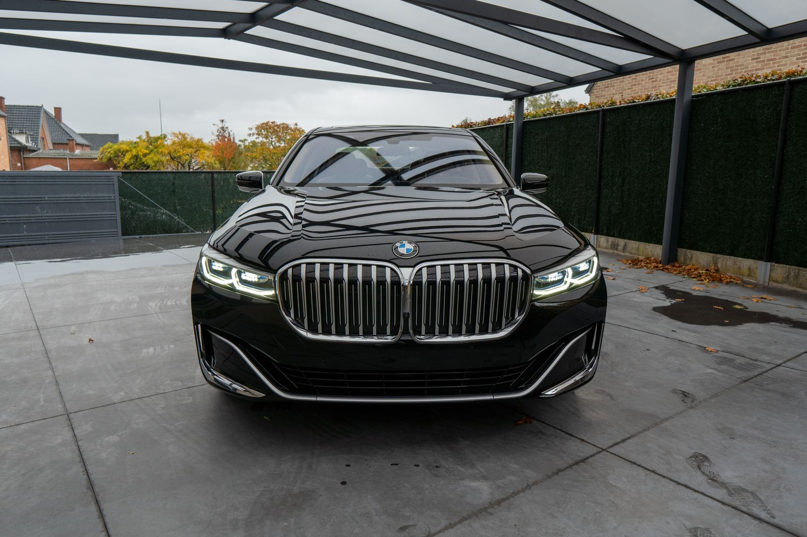

Achar oficina de confiança para importado em Salvador não é tarefa simples. Muita gente liga em cinco lugares diferentes e ouve a mesma resposta: "aqui a gente não mexe nesse modelo". O resultado é ficar refém do concessionário, pagando preço de tabela por serviços que uma oficina especializada resolve com a mesma qualidade.
Esse texto reúne o que dá pra checar antes de fechar com uma oficina. Também mostra onde encontrar esse suporte em Salvador, sem depender só da rede autorizada.
Por que nem toda oficina consegue atender importados de verdade
O primeiro obstáculo é o scanner. Carros importados usam protocolos de diagnóstico próprios de cada montadora. Um scanner genérico até lê alguns códigos de erro, mas não acessa funções avançadas como calibração de injeção, programação de chave ou reset de serviço específico da marca.
O segundo obstáculo é peça. Motor de BMW, Mercedes ou Audi tem tolerâncias e especificações diferentes de um carro nacional. Usar peça errada ou fora do padrão do fabricante causa retrabalho, e às vezes dano maior no motor ou na eletrônica do veículo.
O terceiro obstáculo é treinamento. Mecânico que nunca trabalhou com sistema de injeção direta de um importado, ou com a suspensão pneumática de um SUV alemão, aprende no erro. Isso custa tempo e dinheiro do dono do carro, que fica sem o veículo por dias enquanto o problema é diagnosticado por tentativa.
Some os três obstáculos e dá pra entender por que tanta oficina prefere recusar o serviço. É mais fácil dizer não do que arriscar um diagnóstico errado num carro caro. O problema é que isso deixa o motorista de importado com poucas opções reais na cidade.
O que uma oficina para importados precisa ter
Equipamento de diagnóstico é o ponto de partida. A oficina precisa ter scanner compatível com os protocolos das marcas que atende, não só um leitor de códigos genérico. Isso muda completamente a precisão do diagnóstico e evita trocar peça boa por engano.
Acesso a peças também pesa na decisão. Não é preciso manter estoque de tudo, mas é preciso ter fornecedor confiável que entregue peça original ou equivalente de qualidade, dentro do prazo que o cliente precisa.
Por fim, experiência prática nas marcas atendidas faz diferença real. Um profissional que já mexeu em várias unidades do mesmo modelo reconhece o problema mais rápido, porque já viu aquele padrão de falha antes.
As marcas importadas mais comuns em Salvador
Em Salvador, os importados mais vistos nas ruas são BMW, Mercedes, Audi e Volkswagen importado. Honda e Toyota também aparecem bastante, em versões importadas ou de linha superior. Cada marca tem particularidades de manutenção. BMW e Mercedes dependem bastante de diagnóstico eletrônico preciso. Audi e Volkswagen importado compartilham parte da plataforma mecânica, mas têm módulos e calibrações próprias.
Quem tem um desses carros costuma ser motorista que rodou o Brasil todo com nacional e decidiu investir em conforto, torque e acabamento. Esse perfil normalmente valoriza manutenção preventiva. Também não abre mão de qualidade no serviço, mas não quer pagar preço de concessionária pra tudo. É exatamente esse motorista que precisa de uma oficina que combine técnica e preço justo.
Honda e Toyota entram nessa lista por outro motivo. Muitos donos trazem o carro de fora do país ou compram versão importada direto, fora da linha vendida normalmente no Brasil. Câmbio automático de certas gerações, sistema híbrido e itens de conforto eletrônico variam bastante entre a versão nacional e a importada do mesmo modelo. Isso exige atenção redobrada na hora de diagnosticar e comprar peça.
Como a Maynard Auto Center atende importados na Av. ACM
Na Av. ACM, 3410, no Iguatemi, a Maynard atende BMW, Mercedes, Audi e Volkswagen importado com equipamento de diagnóstico compatível com cada marca. Honda e Toyota, incluindo versões importadas e de linha superior, entram na mesma lista. O ponto de partida é sempre identificar o problema real antes de trocar qualquer peça.
A localização na Av. ACM facilita o acesso de quem mora ou trabalha em Itaigara, Pituba, Caminho das Árvores e Horto Florestal. Atende também quem vem de Stiep, Boca do Rio, Imbuí e Tancredo Neves. É uma região central de Salvador, e o deslocamento é rápido pra quem vem de qualquer um desses bairros levar o carro e voltar depois pra buscar.
FAQ
Oficina para importado é sempre mais cara?
Não necessariamente. O valor da mão de obra costuma ser parecido com o de um carro nacional. O que pesa no preço final geralmente é a peça, já que peças de marcas importadas custam mais caro por conta de importação e especificação técnica.
Preciso ir ao concessionário para meu importado?
Fora do período de garantia de fábrica, não é obrigatório. Uma oficina que tenha scanner compatível com a marca e use peças adequadas entrega o mesmo padrão técnico de manutenção, com agilidade a mais no atendimento.
A garantia do carro cai se eu for a uma oficina particular?
Pela lei brasileira, não cai automaticamente. A montadora só pode negar a garantia se comprovar que o serviço feito fora da concessionária causou o defeito. Numa manutenção feita corretamente, isso não acontece.
Como agendar para levar meu importado?
É simples. Basta chamar no WhatsApp da Maynard Auto Center pelo (71) 99626-6142, informar o modelo do carro e o serviço que precisa, e já sair de lá com o horário marcado.
Se o seu importado está pedindo revisão, apresentando algum ruído estranho ou luz acesa no painel, vale marcar um horário antes que o problema cresça. É na Av. ACM, 3410, no Iguatemi. Chama no WhatsApp (71) 99626-6142 e agenda uma avaliação.